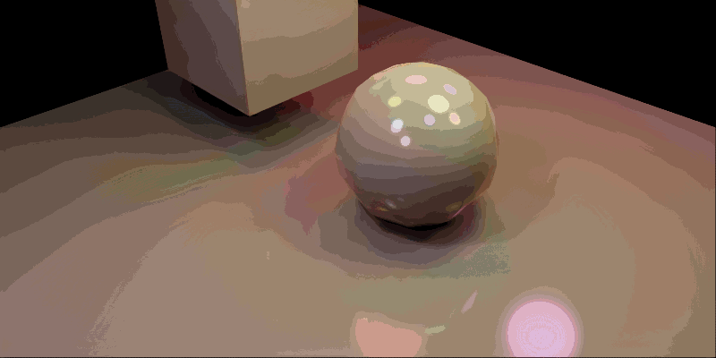
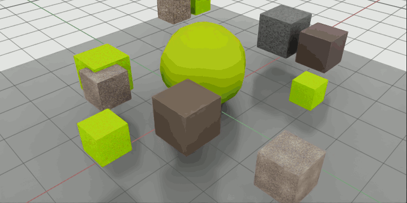
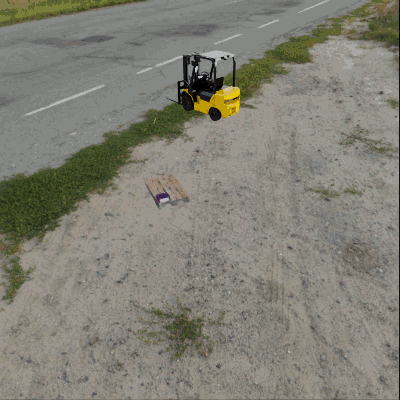
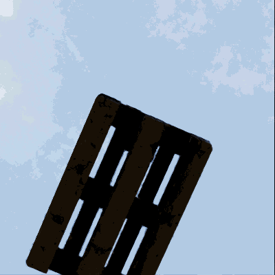
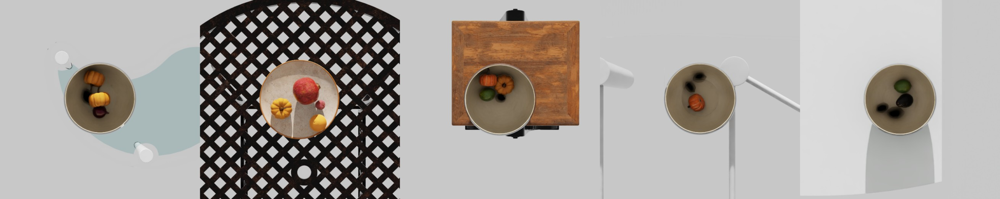

Randomization Snippets#
Examples of randomization using USD and Isaac Sim APIs. These examples demonstrate how to randomize scenes for synthetic data generation (SDG) in scenarios where default replicator randomizers are not sufficient or applicable.
The snippets are designed to align with the structure and function names used in the replicator example snippets. In comparison they also have the option to write the data to disk by stetting write_data=True.
Prerequisites:
Familiarity with USD.
Ability to execute code from the Script Editor.
Understanding basic replicator concepts, such as subframes.
Randomizing Light Sources#
This snippet sets up a new environment containing a cube and a sphere. It then spawns a given number of lights and randomizes selected attributes for these lights over a specified number of frames.
{kind=link}

Randomizing Light Sources
import asyncio
import os
import numpy as np
import omni.kit.commands
import omni.replicator.core as rep
import omni.usd
from isaacsim.core.experimental.utils.semantics import add_labels
from pxr import Gf, Sdf, UsdGeom
omni.usd.get_context().new_stage()
stage = omni.usd.get_context().get_stage()
sphere = stage.DefinePrim("/World/Sphere", "Sphere")
UsdGeom.Xformable(sphere).AddTranslateOp().Set((0.0, 1.0, 1.0))
add_labels(sphere, labels=["sphere"], taxonomy="class")
cube = stage.DefinePrim("/World/Cube", "Cube")
UsdGeom.Xformable(cube).AddTranslateOp().Set((0.0, -2.0, 2.0))
add_labels(cube, labels=["cube"], taxonomy="class")
plane_path = "/World/Plane"
omni.kit.commands.execute("CreateMeshPrimWithDefaultXform", prim_path=plane_path, prim_type="Plane")
plane_prim = stage.GetPrimAtPath(plane_path)
plane_prim.CreateAttribute("xformOp:scale", Sdf.ValueTypeNames.Double3, False).Set(Gf.Vec3d(10, 10, 1))
def sphere_lights(num):
lights = []
for i in range(num):
# "CylinderLight", "DiskLight", "DistantLight", "DomeLight", "RectLight", "SphereLight"
prim_type = "SphereLight"
next_free_path = omni.usd.get_stage_next_free_path(stage, f"/World/{prim_type}", False)
light_prim = stage.DefinePrim(next_free_path, prim_type)
UsdGeom.Xformable(light_prim).AddTranslateOp().Set((0.0, 0.0, 0.0))
UsdGeom.Xformable(light_prim).AddRotateXYZOp().Set((0.0, 0.0, 0.0))
UsdGeom.Xformable(light_prim).AddScaleOp().Set((1.0, 1.0, 1.0))
light_prim.CreateAttribute("inputs:enableColorTemperature", Sdf.ValueTypeNames.Bool).Set(True)
light_prim.CreateAttribute("inputs:colorTemperature", Sdf.ValueTypeNames.Float).Set(6500.0)
light_prim.CreateAttribute("inputs:radius", Sdf.ValueTypeNames.Float).Set(0.5)
light_prim.CreateAttribute("inputs:intensity", Sdf.ValueTypeNames.Float).Set(30000.0)
light_prim.CreateAttribute("inputs:color", Sdf.ValueTypeNames.Color3f).Set((1.0, 1.0, 1.0))
light_prim.CreateAttribute("inputs:exposure", Sdf.ValueTypeNames.Float).Set(0.0)
light_prim.CreateAttribute("inputs:diffuse", Sdf.ValueTypeNames.Float).Set(1.0)
light_prim.CreateAttribute("inputs:specular", Sdf.ValueTypeNames.Float).Set(1.0)
lights.append(light_prim)
return lights
async def run_randomizations_async(num_frames, lights, write_data, delay=None):
if write_data:
out_dir = os.path.join(os.getcwd(), "_out_rand_lights")
print(f"Writing data to {out_dir}..")
backend = rep.backends.get("DiskBackend")
backend.initialize(output_dir=out_dir)
writer = rep.WriterRegistry.get("BasicWriter")
writer.initialize(backend=backend, rgb=True)
cam = rep.functional.create.camera(position=(5, 5, 5), look_at=(0, 0, 0), name="Camera")
rp = rep.create.render_product(cam, resolution=(512, 512))
writer.attach(rp)
for _ in range(num_frames):
for light in lights:
light.GetAttribute("xformOp:translate").Set(
(np.random.uniform(-5, 5), np.random.uniform(-5, 5), np.random.uniform(4, 6))
)
scale_rand = np.random.uniform(0.5, 1.5)
light.GetAttribute("xformOp:scale").Set((scale_rand, scale_rand, scale_rand))
light.GetAttribute("inputs:colorTemperature").Set(np.random.normal(4500, 1500))
light.GetAttribute("inputs:intensity").Set(np.random.normal(25000, 5000))
light.GetAttribute("inputs:color").Set(
(np.random.uniform(0.1, 0.9), np.random.uniform(0.1, 0.9), np.random.uniform(0.1, 0.9))
)
if write_data:
await rep.orchestrator.step_async(rt_subframes=16)
else:
await omni.kit.app.get_app().next_update_async()
# Optional delay between frames to better visualize the randomization in the viewport
if delay is not None and delay > 0:
await asyncio.sleep(delay)
# Wait for the data to be written to disk and cleanup writer and render product
if write_data:
await rep.orchestrator.wait_until_complete_async()
writer.detach()
rp.destroy()
num_frames = 10
lights = sphere_lights(10)
asyncio.ensure_future(run_randomizations_async(num_frames=num_frames, lights=lights, write_data=True, delay=0.2))
Randomizing Textures#
The snippet sets up an environment, spawns a given number of cubes and spheres, and randomizes their textures for the given number of frames. After the randomizations their original materials are reassigned. The snippet also showcases how to create a new material and assign it to a prim.
{kind=link}

Randomizing Textures
import asyncio
import os
import numpy as np
import omni.replicator.core as rep
import omni.usd
from isaacsim.core.experimental.utils.semantics import add_labels, get_labels
from isaacsim.storage.native import get_assets_root_path_async
from pxr import Gf, Sdf, UsdGeom, UsdShade
omni.usd.get_context().new_stage()
stage = omni.usd.get_context().get_stage()
dome_light = stage.DefinePrim("/World/DomeLight", "DomeLight")
dome_light.CreateAttribute("inputs:intensity", Sdf.ValueTypeNames.Float).Set(1000.0)
sphere = stage.DefinePrim("/World/Sphere", "Sphere")
UsdGeom.Xformable(sphere).AddTranslateOp().Set((0.0, 0.0, 1.0))
add_labels(sphere, labels=["sphere"], taxonomy="class")
num_cubes = 10
for _ in range(num_cubes):
prim_type = "Cube"
next_free_path = omni.usd.get_stage_next_free_path(stage, f"/World/{prim_type}", False)
cube = stage.DefinePrim(next_free_path, prim_type)
UsdGeom.Xformable(cube).AddTranslateOp().Set((np.random.uniform(-3.5, 3.5), np.random.uniform(-3.5, 3.5), 1))
scale_rand = np.random.uniform(0.25, 0.5)
UsdGeom.Xformable(cube).AddScaleOp().Set((scale_rand, scale_rand, scale_rand))
add_labels(cube, labels=["cube"], taxonomy="class")
plane_path = "/World/Plane"
omni.kit.commands.execute("CreateMeshPrimWithDefaultXform", prim_path=plane_path, prim_type="Plane")
plane_prim = stage.GetPrimAtPath(plane_path)
plane_prim.CreateAttribute("xformOp:scale", Sdf.ValueTypeNames.Double3, False).Set(Gf.Vec3d(10, 10, 1))
def get_shapes():
stage = omni.usd.get_context().get_stage()
shapes = []
for prim in stage.Traverse():
labels = get_labels(prim)
if class_labels := labels.get("class"):
if "cube" in class_labels or "sphere" in class_labels:
shapes.append(prim)
return shapes
shapes = get_shapes()
def create_omnipbr_material(mtl_url, mtl_name, mtl_path):
stage = omni.usd.get_context().get_stage()
omni.kit.commands.execute("CreateMdlMaterialPrim", mtl_url=mtl_url, mtl_name=mtl_name, mtl_path=mtl_path)
material_prim = stage.GetPrimAtPath(mtl_path)
shader = UsdShade.Shader(omni.usd.get_shader_from_material(material_prim, get_prim=True))
# Add value inputs
shader.CreateInput("diffuse_color_constant", Sdf.ValueTypeNames.Color3f)
shader.CreateInput("reflection_roughness_constant", Sdf.ValueTypeNames.Float)
shader.CreateInput("metallic_constant", Sdf.ValueTypeNames.Float)
# Add texture inputs
shader.CreateInput("diffuse_texture", Sdf.ValueTypeNames.Asset)
shader.CreateInput("reflectionroughness_texture", Sdf.ValueTypeNames.Asset)
shader.CreateInput("metallic_texture", Sdf.ValueTypeNames.Asset)
# Add other attributes
shader.CreateInput("project_uvw", Sdf.ValueTypeNames.Bool)
# Add texture scale and rotate
shader.CreateInput("texture_scale", Sdf.ValueTypeNames.Float2)
shader.CreateInput("texture_rotate", Sdf.ValueTypeNames.Float)
material = UsdShade.Material(material_prim)
return material
def create_materials(num):
MDL = "OmniPBR.mdl"
mtl_name, _ = os.path.splitext(MDL)
MAT_PATH = "/World/Looks"
materials = []
for _ in range(num):
prim_path = omni.usd.get_stage_next_free_path(stage, f"{MAT_PATH}/{mtl_name}", False)
mat = create_omnipbr_material(mtl_url=MDL, mtl_name=mtl_name, mtl_path=prim_path)
materials.append(mat)
return materials
materials = create_materials(len(shapes))
async def run_randomizations_async(num_frames, materials, write_data, delay=None):
assets_root_path = await get_assets_root_path_async()
textures = [
assets_root_path + "/NVIDIA/Materials/vMaterials_2/Ground/textures/aggregate_exposed_diff.jpg",
assets_root_path + "/NVIDIA/Materials/vMaterials_2/Ground/textures/gravel_track_ballast_diff.jpg",
assets_root_path + "/NVIDIA/Materials/vMaterials_2/Ground/textures/gravel_track_ballast_multi_R_rough_G_ao.jpg",
assets_root_path + "/NVIDIA/Materials/vMaterials_2/Ground/textures/rough_gravel_rough.jpg",
]
if write_data:
out_dir = os.path.join(os.getcwd(), "_out_rand_textures")
print(f"Writing data to {out_dir}..")
backend = rep.backends.get("DiskBackend")
backend.initialize(output_dir=out_dir)
writer = rep.WriterRegistry.get("BasicWriter")
writer.initialize(backend=backend, rgb=True)
cam = rep.functional.create.camera(position=(5, 5, 5), look_at=(0, 0, 0), name="Camera")
rp = rep.create.render_product(cam, resolution=(512, 512))
writer.attach(rp)
# Apply the new materials and store the initial ones to reassign later
initial_materials = {}
for i, shape in enumerate(shapes):
cur_mat, _ = UsdShade.MaterialBindingAPI(shape).ComputeBoundMaterial()
initial_materials[shape] = cur_mat
UsdShade.MaterialBindingAPI(shape).Bind(materials[i], UsdShade.Tokens.strongerThanDescendants)
for _ in range(num_frames):
for mat in materials:
shader = UsdShade.Shader(omni.usd.get_shader_from_material(mat, get_prim=True))
diffuse_texture = np.random.choice(textures)
shader.GetInput("diffuse_texture").Set(diffuse_texture)
project_uvw = np.random.choice([True, False], p=[0.9, 0.1])
shader.GetInput("project_uvw").Set(bool(project_uvw))
texture_scale = np.random.uniform(0.1, 1)
shader.GetInput("texture_scale").Set((texture_scale, texture_scale))
texture_rotate = np.random.uniform(0, 45)
shader.GetInput("texture_rotate").Set(texture_rotate)
if write_data:
await rep.orchestrator.step_async(rt_subframes=4)
else:
await omni.kit.app.get_app().next_update_async()
# Optional delay between frames to better visualize the randomization in the viewport
if delay is not None and delay > 0:
await asyncio.sleep(delay)
# Wait for the data to be written to disk and cleanup writer and render product
if write_data:
await rep.orchestrator.wait_until_complete_async()
writer.detach()
rp.destroy()
# Reassign the initial materials
for shape, mat in initial_materials.items():
if mat:
UsdShade.MaterialBindingAPI(shape).Bind(mat, UsdShade.Tokens.strongerThanDescendants)
else:
UsdShade.MaterialBindingAPI(shape).UnbindAllBindings()
num_frames = 10
asyncio.ensure_future(run_randomizations_async(num_frames, materials, write_data=True, delay=0.2))
Sequential Randomizations#
The snippet provides an example of more complex randomizations, where the results of the first randomization are used to determine the next randomization. It uses a custom sampler function to set the location of the camera by iterating over (almost) equidistant points on a sphere. The snippet starts by setting up the environment, a forklift, a pallet, a bin, and a dome light. For every randomization frame, it cycles through the dome light textures, moves the pallet to a random location, and then moves the bin so that it is fully on top of the pallet. Finally, it moves the camera to a new location on the sphere, ensuring it faces the bin.
{kind=link}

{kind=link}

Sequential Randomizations
import asyncio
import itertools
import os
import numpy as np
import omni.replicator.core as rep
import omni.usd
from isaacsim.storage.native import get_assets_root_path_async
from pxr import Gf, Usd, UsdGeom, UsdLux
# Fibonacci sphere algorithm: https://arxiv.org/pdf/0912.4540
def next_point_on_sphere(idx, num_points, radius=1, origin=(0, 0, 0)):
offset = 2.0 / num_points
inc = np.pi * (3.0 - np.sqrt(5.0))
z = ((idx * offset) - 1) + (offset / 2)
phi = ((idx + 1) % num_points) * inc
r = np.sqrt(1 - pow(z, 2))
y = np.cos(phi) * r
x = np.sin(phi) * r
return [(x * radius) + origin[0], (y * radius) + origin[1], (z * radius) + origin[2]]
async def run_randomizations_async(
num_frames, forklift_path, pallet_path, bin_path, dome_textures, write_data, delay=None
):
assets_root_path = await get_assets_root_path_async()
await omni.usd.get_context().new_stage_async()
stage = omni.usd.get_context().get_stage()
dome_light = UsdLux.DomeLight.Define(stage, "/World/Lights/DomeLight")
dome_light.GetIntensityAttr().Set(1000)
forklift_prim = stage.DefinePrim("/World/Forklift", "Xform")
forklift_prim.GetReferences().AddReference(assets_root_path + forklift_path)
if not forklift_prim.GetAttribute("xformOp:translate"):
UsdGeom.Xformable(forklift_prim).AddTranslateOp()
forklift_prim.GetAttribute("xformOp:translate").Set((-4.5, -4.5, 0))
pallet_prim = stage.DefinePrim("/World/Pallet", "Xform")
pallet_prim.GetReferences().AddReference(assets_root_path + pallet_path)
if not pallet_prim.GetAttribute("xformOp:translate"):
UsdGeom.Xformable(pallet_prim).AddTranslateOp()
if not pallet_prim.GetAttribute("xformOp:rotateXYZ"):
UsdGeom.Xformable(pallet_prim).AddRotateXYZOp()
bin_prim = stage.DefinePrim("/World/Bin", "Xform")
bin_prim.GetReferences().AddReference(assets_root_path + bin_path)
if not bin_prim.GetAttribute("xformOp:translate"):
UsdGeom.Xformable(bin_prim).AddTranslateOp()
if not bin_prim.GetAttribute("xformOp:rotateXYZ"):
UsdGeom.Xformable(bin_prim).AddRotateXYZOp()
view_cam = stage.DefinePrim("/World/Camera", "Camera")
if not view_cam.GetAttribute("xformOp:translate"):
UsdGeom.Xformable(view_cam).AddTranslateOp()
if not view_cam.GetAttribute("xformOp:orient"):
UsdGeom.Xformable(view_cam).AddOrientOp()
dome_textures_full = [assets_root_path + tex for tex in dome_textures]
textures_cycle = itertools.cycle(dome_textures_full)
if write_data:
out_dir = os.path.join(os.getcwd(), "_out_rand_sphere_scan")
print(f"Writing data to {out_dir}..")
backend = rep.backends.get("DiskBackend")
backend.initialize(output_dir=out_dir)
writer = rep.WriterRegistry.get("BasicWriter")
writer.initialize(backend=backend, rgb=True)
persp_cam = rep.functional.create.camera(position=(5, 5, 5), look_at=(0, 0, 0), name="PerspCamera")
rp_persp = rep.create.render_product(persp_cam, (512, 512), name="PerspView")
rp_view = rep.create.render_product(view_cam, (512, 512), name="SphereView")
writer.attach([rp_view, rp_persp])
bb_cache = UsdGeom.BBoxCache(time=Usd.TimeCode.Default(), includedPurposes=[UsdGeom.Tokens.default_])
pallet_size = bb_cache.ComputeWorldBound(pallet_prim).GetRange().GetSize()
pallet_length = pallet_size.GetLength()
bin_size = bb_cache.ComputeWorldBound(bin_prim).GetRange().GetSize()
for i in range(num_frames):
# Set next background texture every nth frame and run an app update
if i % 5 == 0:
dome_light.GetTextureFileAttr().Set(next(textures_cycle))
await omni.kit.app.get_app().next_update_async()
# Randomize pallet pose
pallet_prim.GetAttribute("xformOp:translate").Set(
Gf.Vec3d(np.random.uniform(-1.5, 1.5), np.random.uniform(-1.5, 1.5), 0)
)
rand_z_rot = np.random.uniform(-90, 90)
pallet_prim.GetAttribute("xformOp:rotateXYZ").Set(Gf.Vec3d(0, 0, rand_z_rot))
pallet_tf_mat = omni.usd.get_world_transform_matrix(pallet_prim)
pallet_rot = pallet_tf_mat.ExtractRotation()
pallet_pos = pallet_tf_mat.ExtractTranslation()
# Randomize bin position on top of the rotated pallet area making sure the bin is fully on the pallet
rand_transl_x = np.random.uniform(-pallet_size[0] / 2 + bin_size[0] / 2, pallet_size[0] / 2 - bin_size[0] / 2)
rand_transl_y = np.random.uniform(-pallet_size[1] / 2 + bin_size[1] / 2, pallet_size[1] / 2 - bin_size[1] / 2)
# Adjust bin position to account for the random rotation of the pallet
rand_z_rot_rad = np.deg2rad(rand_z_rot)
rot_adjusted_transl_x = rand_transl_x * np.cos(rand_z_rot_rad) - rand_transl_y * np.sin(rand_z_rot_rad)
rot_adjusted_transl_y = rand_transl_x * np.sin(rand_z_rot_rad) + rand_transl_y * np.cos(rand_z_rot_rad)
bin_prim.GetAttribute("xformOp:translate").Set(
Gf.Vec3d(
pallet_pos[0] + rot_adjusted_transl_x,
pallet_pos[1] + rot_adjusted_transl_y,
pallet_pos[2] + pallet_size[2] + bin_size[2] / 2,
)
)
# Keep bin rotation aligned with pallet
bin_prim.GetAttribute("xformOp:rotateXYZ").Set(pallet_rot.GetAxis() * pallet_rot.GetAngle())
# Get next camera position on a sphere looking at the bin with a randomized distance
rand_radius = np.random.normal(3, 0.5) * pallet_length
bin_pos = omni.usd.get_world_transform_matrix(bin_prim).ExtractTranslation()
cam_pos = next_point_on_sphere(i, num_points=num_frames, radius=rand_radius, origin=bin_pos)
view_cam.GetAttribute("xformOp:translate").Set(Gf.Vec3d(*cam_pos))
eye = Gf.Vec3d(*cam_pos)
target = Gf.Vec3d(*bin_pos)
up_axis = Gf.Vec3d(0, 0, 1)
look_at_quatd = Gf.Matrix4d().SetLookAt(eye, target, up_axis).GetInverse().ExtractRotation().GetQuat()
view_cam.GetAttribute("xformOp:orient").Set(Gf.Quatf(look_at_quatd))
if write_data:
await rep.orchestrator.step_async(rt_subframes=4, delta_time=0.0)
else:
await omni.kit.app.get_app().next_update_async()
# Optional delay between frames to better visualize the randomization in the viewport
if delay is not None and delay > 0:
await asyncio.sleep(delay)
# Wait for the data to be written to disk and cleanup writer and render products
if write_data:
await rep.orchestrator.wait_until_complete_async()
writer.detach()
rp_persp.destroy()
rp_view.destroy()
NUM_FRAMES = 90
FORKLIFT_PATH = "/Isaac/Props/Forklift/forklift.usd"
PALLET_PATH = "/Isaac/Props/Pallet/pallet.usd"
BIN_PATH = "/Isaac/Props/KLT_Bin/small_KLT_visual.usd"
DOME_TEXTURES = [
"/NVIDIA/Assets/Skies/Cloudy/champagne_castle_1_4k.hdr",
"/NVIDIA/Assets/Skies/Clear/evening_road_01_4k.hdr",
"/NVIDIA/Assets/Skies/Clear/mealie_road_4k.hdr",
"/NVIDIA/Assets/Skies/Clear/qwantani_4k.hdr",
]
asyncio.ensure_future(
run_randomizations_async(
NUM_FRAMES, FORKLIFT_PATH, PALLET_PATH, BIN_PATH, DOME_TEXTURES, write_data=True, delay=0.2
)
)
Physics-based Randomized Volume Filling#
The snippet randomizes the stacking of objects on multiple surfaces. It randomly spawns a given number of pallets in the selected areas and then spawns physically simulated boxes on top of them. A temporary collision box area is created around the pallets to prevent the boxes from falling off. After all the boxes have been dropped, they are moved in various directions and finally pulled towards the center of the pallet for more stable stacking. Finally, the collision area is removed, after which the boxes can also fall to the ground. To allow easier sliding of the boxes into more stable positions, their friction is temporarily reduced during the simulation.


Physics-based Randomized Volume Filling
import asyncio
import os
import random
from itertools import chain
import carb
import omni.kit.app
import omni.physx
import omni.replicator.core as rep
import omni.usd
from isaacsim.storage.native import get_assets_root_path_async
from pxr import Gf, PhysicsSchemaTools, PhysxSchema, Sdf, Usd, UsdGeom, UsdPhysics, UsdShade, UsdUtils
# Add transformation properties to the prim (if not already present)
def set_transform_attributes(prim, location=None, orientation=None, rotation=None, scale=None):
if location is not None:
if not prim.HasAttribute("xformOp:translate"):
UsdGeom.Xformable(prim).AddTranslateOp()
prim.GetAttribute("xformOp:translate").Set(location)
if orientation is not None:
if not prim.HasAttribute("xformOp:orient"):
UsdGeom.Xformable(prim).AddOrientOp()
prim.GetAttribute("xformOp:orient").Set(orientation)
if rotation is not None:
if not prim.HasAttribute("xformOp:rotateXYZ"):
UsdGeom.Xformable(prim).AddRotateXYZOp()
prim.GetAttribute("xformOp:rotateXYZ").Set(rotation)
if scale is not None:
if not prim.HasAttribute("xformOp:scale"):
UsdGeom.Xformable(prim).AddScaleOp()
prim.GetAttribute("xformOp:scale").Set(scale)
# Enables collisions with the asset (without rigid body dynamics the asset will be static)
def add_colliders(prim):
# Iterate descendant prims (including root) and add colliders to mesh or primitive types
for desc_prim in Usd.PrimRange(prim):
if desc_prim.IsA(UsdGeom.Mesh) or desc_prim.IsA(UsdGeom.Gprim):
# Physics
if not desc_prim.HasAPI(UsdPhysics.CollisionAPI):
collision_api = UsdPhysics.CollisionAPI.Apply(desc_prim)
else:
collision_api = UsdPhysics.CollisionAPI(desc_prim)
collision_api.CreateCollisionEnabledAttr(True)
# Add mesh specific collision properties only to mesh types
if desc_prim.IsA(UsdGeom.Mesh):
if not desc_prim.HasAPI(UsdPhysics.MeshCollisionAPI):
mesh_collision_api = UsdPhysics.MeshCollisionAPI.Apply(desc_prim)
else:
mesh_collision_api = UsdPhysics.MeshCollisionAPI(desc_prim)
mesh_collision_api.CreateApproximationAttr().Set("convexHull")
# Enables rigid body dynamics (physics simulation) on the prim (having valid colliders is recommended)
def add_rigid_body_dynamics(prim, disable_gravity=False, angular_damping=None):
# Physics
if not prim.HasAPI(UsdPhysics.RigidBodyAPI):
rigid_body_api = UsdPhysics.RigidBodyAPI.Apply(prim)
else:
rigid_body_api = UsdPhysics.RigidBodyAPI(prim)
rigid_body_api.CreateRigidBodyEnabledAttr(True)
# PhysX
if not prim.HasAPI(PhysxSchema.PhysxRigidBodyAPI):
physx_rigid_body_api = PhysxSchema.PhysxRigidBodyAPI.Apply(prim)
else:
physx_rigid_body_api = PhysxSchema.PhysxRigidBodyAPI(prim)
physx_rigid_body_api.GetDisableGravityAttr().Set(disable_gravity)
if angular_damping is not None:
physx_rigid_body_api.CreateAngularDampingAttr().Set(angular_damping)
# Create a new prim with the provided asset URL and transform properties
def create_asset(stage, asset_url, path, location=None, rotation=None, orientation=None, scale=None):
prim_path = omni.usd.get_stage_next_free_path(stage, path, False)
prim = stage.DefinePrim(prim_path, "Xform")
prim.GetReferences().AddReference(asset_url)
set_transform_attributes(prim, location=location, rotation=rotation, orientation=orientation, scale=scale)
return prim
# Create a new prim with the provided asset URL and transform properties including colliders
def create_asset_with_colliders(stage, asset_url, path, location=None, rotation=None, orientation=None, scale=None):
prim = create_asset(stage, asset_url, path, location, rotation, orientation, scale)
add_colliders(prim)
return prim
# Create collision walls around the top surface of the prim with the given height and thickness
def create_collision_walls(stage, prim, bbox_cache=None, height=2, thickness=0.3, material=None, visible=False):
# Use the untransformed axis-aligned bounding box to calculate the prim surface size and center
if bbox_cache is None:
bbox_cache = UsdGeom.BBoxCache(Usd.TimeCode.Default(), includedPurposes=[UsdGeom.Tokens.default_])
local_range = bbox_cache.ComputeWorldBound(prim).GetRange()
width, depth, local_height = local_range.GetSize()
# Raise the midpoint height to the prim's surface
mid = local_range.GetMidpoint() + Gf.Vec3d(0, 0, local_height / 2)
# Define the walls (name, location, size) with the specified thickness added externally to the surface and height
walls = [
("floor", (mid[0], mid[1], mid[2] - thickness / 2), (width, depth, thickness)),
("ceiling", (mid[0], mid[1], mid[2] + height + thickness / 2), (width, depth, thickness)),
(
"left_wall",
(mid[0] - (width + thickness) / 2, mid[1], mid[2] + height / 2),
(thickness, depth, height),
),
(
"right_wall",
(mid[0] + (width + thickness) / 2, mid[1], mid[2] + height / 2),
(thickness, depth, height),
),
(
"front_wall",
(mid[0], mid[1] + (depth + thickness) / 2, mid[2] + height / 2),
(width, thickness, height),
),
(
"back_wall",
(mid[0], mid[1] - (depth + thickness) / 2, mid[2] + height / 2),
(width, thickness, height),
),
]
# Use the parent prim path to create the walls as children (use local coordinates)
prim_path = prim.GetPath()
collision_walls = []
for name, location, size in walls:
prim = stage.DefinePrim(f"{prim_path}/{name}", "Cube")
scale = (size[0] / 2.0, size[1] / 2.0, size[2] / 2.0)
set_transform_attributes(prim, location=location, scale=scale)
add_colliders(prim)
if not visible:
UsdGeom.Imageable(prim).MakeInvisible()
if material is not None:
mat_binding_api = UsdShade.MaterialBindingAPI.Apply(prim)
mat_binding_api.Bind(material, UsdShade.Tokens.weakerThanDescendants, "physics")
collision_walls.append(prim)
return collision_walls
# Slide the assets independently in perpendicular directions and then pull them all together towards the given center
async def apply_forces_async(stage, boxes, pallet, strength=550, strength_center_multiplier=2):
timeline = omni.timeline.get_timeline_interface()
timeline.play()
# Get the pallet center and forward vector to apply forces in the perpendicular directions and towards the center
pallet_tf: Gf.Matrix4d = UsdGeom.Xformable(pallet).ComputeLocalToWorldTransform(Usd.TimeCode.Default())
pallet_center = pallet_tf.ExtractTranslation()
pallet_rot: Gf.Rotation = pallet_tf.ExtractRotation()
force_forward = Gf.Vec3d(pallet_rot.TransformDir(Gf.Vec3d(1, 0, 0))) * strength
force_right = Gf.Vec3d(pallet_rot.TransformDir(Gf.Vec3d(0, 1, 0))) * strength
physx_simulation_interface = omni.physx.get_physx_simulation_interface()
stage_id = UsdUtils.StageCache.Get().GetId(stage).ToLongInt()
for box_prim in boxes:
body_path = PhysicsSchemaTools.sdfPathToInt(box_prim.GetPath())
forces = [force_forward, force_right, -force_forward, -force_right]
for force in chain(forces, forces):
box_tf: Gf.Matrix4d = UsdGeom.Xformable(box_prim).ComputeLocalToWorldTransform(Usd.TimeCode.Default())
box_position = carb.Float3(*box_tf.ExtractTranslation())
physx_simulation_interface.apply_force_at_pos(stage_id, body_path, carb.Float3(*force), box_position)
for _ in range(10):
await omni.kit.app.get_app().next_update_async()
# Pull all boxes at once to the pallet center
for box_prim in boxes:
body_path = PhysicsSchemaTools.sdfPathToInt(box_prim.GetPath())
box_tf: Gf.Matrix4d = UsdGeom.Xformable(box_prim).ComputeLocalToWorldTransform(Usd.TimeCode.Default())
box_location = box_tf.ExtractTranslation()
force_to_center = (pallet_center - box_location) * strength * strength_center_multiplier
physx_simulation_interface.apply_force_at_pos(
stage_id,
body_path,
carb.Float3(*force_to_center),
carb.Float3(*box_location),
)
for _ in range(20):
await omni.kit.app.get_app().next_update_async()
timeline.pause()
# Create a new stage and and run the example scenario
async def stack_boxes_on_pallet_async(pallet_prim, boxes_urls_and_weights, num_boxes, drop_height=1.5, drop_margin=0.2):
pallet_path = pallet_prim.GetPath()
print(f"[BoxStacking] Running scenario for pallet {pallet_path} with {num_boxes} boxes..")
stage = omni.usd.get_context().get_stage()
bbox_cache = UsdGeom.BBoxCache(Usd.TimeCode.Default(), includedPurposes=[UsdGeom.Tokens.default_])
# Create a custom physics material to allow the boxes to easily slide into stacking positions
material_path = f"{pallet_path}/Looks/PhysicsMaterial"
default_material = UsdShade.Material.Define(stage, material_path)
physics_material = UsdPhysics.MaterialAPI.Apply(default_material.GetPrim())
physics_material.CreateRestitutionAttr().Set(0.0) # Inelastic collision (no bouncing)
physics_material.CreateStaticFrictionAttr().Set(0.01) # Small friction to allow sliding of stationary boxes
physics_material.CreateDynamicFrictionAttr().Set(0.01) # Small friction to allow sliding of moving boxes
# Apply the physics material to the pallet
mat_binding_api = UsdShade.MaterialBindingAPI.Apply(pallet_prim)
mat_binding_api.Bind(default_material, UsdShade.Tokens.weakerThanDescendants, "physics")
# Create collision walls around the top of the pallet and apply the physics material to them
collision_walls = create_collision_walls(
stage, pallet_prim, bbox_cache, height=drop_height + drop_margin, material=default_material
)
# Create the random boxes (without physics) with the specified weights and sort them by size (volume)
box_urls, box_weights = zip(*boxes_urls_and_weights)
rand_boxes_urls = random.choices(box_urls, weights=box_weights, k=num_boxes)
boxes = [create_asset(stage, box_url, f"{pallet_path}_Boxes/Box_{i}") for i, box_url in enumerate(rand_boxes_urls)]
boxes.sort(key=lambda box: bbox_cache.ComputeLocalBound(box).GetVolume(), reverse=True)
# Calculate the drop area above the pallet taking into account the pallet surface, drop height and the margin
# Note: The boxes can be spawned colliding with the surrounding collision walls as they will be pushed inwards
pallet_range = bbox_cache.ComputeWorldBound(pallet_prim).GetRange()
pallet_width, pallet_depth, pallet_heigth = pallet_range.GetSize()
# Move the spawn center at the given height above the pallet surface
spawn_center = pallet_range.GetMidpoint() + Gf.Vec3d(0, 0, pallet_heigth / 2 + drop_height)
spawn_width, spawn_depth = pallet_width / 2 - drop_margin, pallet_depth / 2 - drop_margin
# Use the pallet local-to-world transform to apply the local random offsets relative to the pallet
pallet_tf: Gf.Matrix4d = UsdGeom.Xformable(pallet_prim).ComputeLocalToWorldTransform(Usd.TimeCode.Default())
pallet_rot: Gf.Rotation = pallet_tf.ExtractRotation()
# Simulate dropping the boxes from random poses on the pallet
timeline = omni.timeline.get_timeline_interface()
for box_prim in boxes:
# Create a random location and orientation for the box within the drop area in local frame
local_loc = spawn_center + Gf.Vec3d(
random.uniform(-spawn_width, spawn_width), random.uniform(-spawn_depth, spawn_depth), 0
)
axes = [Gf.Vec3d(1, 0, 0), Gf.Vec3d(0, 1, 0), Gf.Vec3d(0, 0, 1)]
angles = [random.choice([180, 90, 0, -90, -180]) + random.uniform(-3, 3) for _ in axes]
local_rot = Gf.Rotation()
for axis, angle in zip(axes, angles):
local_rot *= Gf.Rotation(axis, angle)
# Transform the local pose to the pallet's world coordinate system
world_loc = pallet_tf.Transform(local_loc)
world_quat = Gf.Quatf((pallet_rot * local_rot).GetQuat())
# Set the spawn pose and enable collisions and rigid body dynamics with dampened angular movements
set_transform_attributes(box_prim, location=world_loc, orientation=world_quat)
add_colliders(box_prim)
add_rigid_body_dynamics(box_prim, angular_damping=0.9)
# Bind the physics material to the box (allow frictionless sliding)
mat_binding_api = UsdShade.MaterialBindingAPI.Apply(box_prim)
mat_binding_api.Bind(default_material, UsdShade.Tokens.weakerThanDescendants, "physics")
# Wait for an app update to load the new attributes
await omni.kit.app.get_app().next_update_async()
# Play simulation for a few frames for each box
timeline.play()
for _ in range(20):
await omni.kit.app.get_app().next_update_async()
timeline.pause()
# Iteratively apply forces to the boxes to move them around then pull them all together towards the pallet center
await apply_forces_async(stage, boxes, pallet_prim)
# Remove rigid body dynamics of the boxes until all other scenarios are completed
for box in boxes:
UsdPhysics.RigidBodyAPI(box).GetRigidBodyEnabledAttr().Set(False)
# Increase the friction to prevent sliding of the boxes on the pallet before removing the collision walls
physics_material.CreateStaticFrictionAttr().Set(0.9)
physics_material.CreateDynamicFrictionAttr().Set(0.9)
# Remove collision walls
for wall in collision_walls:
stage.RemovePrim(wall.GetPath())
return boxes
# Run the example scenario
async def run_box_stacking_scenarios_async(num_pallets, env_url=None, write_data=False):
# Get assets root path once for all asset loading operations
assets_root_path = await get_assets_root_path_async()
# List of pallets and boxes to randomly choose from with their respective weights
pallets_urls_and_weights = [
(assets_root_path + "/Isaac/Environments/Simple_Warehouse/Props/SM_PaletteA_01.usd", 0.25),
(assets_root_path + "/Isaac/Environments/Simple_Warehouse/Props/SM_PaletteA_02.usd", 0.75),
]
boxes_urls_and_weights = [
(assets_root_path + "/Isaac/Environments/Simple_Warehouse/Props/SM_CardBoxA_01.usd", 0.02),
(assets_root_path + "/Isaac/Environments/Simple_Warehouse/Props/SM_CardBoxB_01.usd", 0.06),
(assets_root_path + "/Isaac/Environments/Simple_Warehouse/Props/SM_CardBoxC_01.usd", 0.12),
(assets_root_path + "/Isaac/Environments/Simple_Warehouse/Props/SM_CardBoxD_01.usd", 0.80),
]
# Load a predefined or create a new stage
if env_url is not None:
env_path = env_url if env_url.startswith("omniverse://") else assets_root_path + env_url
omni.usd.get_context().open_stage(env_path)
stage = omni.usd.get_context().get_stage()
else:
omni.usd.get_context().new_stage()
stage = omni.usd.get_context().get_stage()
distant_light = stage.DefinePrim("/World/Lights/DistantLight", "DistantLight")
distant_light.CreateAttribute("inputs:intensity", Sdf.ValueTypeNames.Float).Set(400.0)
if not distant_light.HasAttribute("xformOp:rotateXYZ"):
UsdGeom.Xformable(distant_light).AddRotateXYZOp()
distant_light.GetAttribute("xformOp:rotateXYZ").Set((0, 60, 0))
dome_light = stage.DefinePrim("/World/Lights/DomeLight", "DomeLight")
dome_light.CreateAttribute("inputs:intensity", Sdf.ValueTypeNames.Float).Set(500.0)
# Spawn the pallets
pallets = []
pallets_urls, pallets_weights = zip(*pallets_urls_and_weights)
rand_pallet_urls = random.choices(pallets_urls, weights=pallets_weights, k=num_pallets)
# Custom pallet poses for the evnironment
custom_pallet_locations = [
(-9.3, 5.3, 1.3),
(-9.3, 7.3, 1.3),
(-9.3, -0.6, 1.3),
]
random.shuffle(custom_pallet_locations)
for i, pallet_url in enumerate(rand_pallet_urls):
# Use a custom location for every other pallet
if env_url is not None:
if i % 2 == 0 and custom_pallet_locations:
rand_loc = Gf.Vec3d(*custom_pallet_locations.pop())
else:
rand_loc = Gf.Vec3d(-6.5, i * 1.75, 0) + Gf.Vec3d(random.uniform(-0.2, 0.2), random.uniform(0, 0.2), 0)
else:
rand_loc = Gf.Vec3d(i * 1.5, 0, 0) + Gf.Vec3d(random.uniform(0, 0.2), random.uniform(-0.2, 0.2), 0)
rand_rot = (0, 0, random.choice([180, 90, 0, -90, -180]) + random.uniform(-15, 15))
pallet_prim = create_asset_with_colliders(
stage, pallet_url, f"/World/Pallet_{i}", location=rand_loc, rotation=rand_rot
)
pallets.append(pallet_prim)
# Stack the boxes on the pallets
total_boxes = []
for pallet in pallets:
if env_url is not None:
rand_num_boxes = random.randint(8, 15)
stacked_boxes = await stack_boxes_on_pallet_async(
pallet, boxes_urls_and_weights, num_boxes=rand_num_boxes, drop_height=1.0
)
else:
rand_num_boxes = random.randint(12, 20)
stacked_boxes = await stack_boxes_on_pallet_async(pallet, boxes_urls_and_weights, num_boxes=rand_num_boxes)
total_boxes.extend(stacked_boxes)
# Re-enable rigid body dynamics of the boxes and run the simulation for a while
for box in total_boxes:
UsdPhysics.RigidBodyAPI(box).GetRigidBodyEnabledAttr().Set(True)
timeline = omni.timeline.get_timeline_interface()
timeline.play()
for _ in range(200):
await omni.kit.app.get_app().next_update_async()
timeline.pause()
if write_data:
out_dir = os.path.join(os.getcwd(), "_out_box_stacking")
print(f"Writing data to {out_dir}..")
backend = rep.backends.get("DiskBackend")
backend.initialize(output_dir=out_dir)
writer = rep.WriterRegistry.get("BasicWriter")
writer.initialize(backend=backend, rgb=True)
cam = rep.functional.create.camera(position=(5, -5, 2), look_at=(0, 0, 0), name="PalletCamera")
rp = rep.create.render_product(cam, resolution=(512, 512))
writer.attach(rp)
# Capture the data and wait for the data to be written to disk
await rep.orchestrator.step_async(rt_subframes=8)
# Wait for the data to be written to disk and cleanup
await rep.orchestrator.wait_until_complete_async()
writer.detach()
rp.destroy()
# asyncio.ensure_future(run_box_stacking_scenarios_async(num_pallets=1, write_data=True))
asyncio.ensure_future(
run_box_stacking_scenarios_async(
num_pallets=6, env_url="/Isaac/Environments/Simple_Warehouse/warehouse.usd", write_data=True
)
)
Simready Assets SDG Example#
Script editor example for using SimReady Assets to randomize the scene. SimReady Assets are physically accurate 3D objects with realistic properties, behavior, and data connections that are optimized for simulation.
Note
The example can only run in async mode and requires the SimReady Explorer window to be enabled to process the search requests.
The example script will create an SDG randomization and capture pipeline scenario with a table, a plate, and a number of items on top of the plate. The scene will be simulated for a while and then the captured images will be saved to disk.
The standalone example can also be run directly (on Windows use python.bat instead of python.sh):
./python.sh standalone_examples/api/isaacsim.replicator.examples/simready_assets_sdg.py

Simready Assets SDG Example
import asyncio
import os
import time
import carb.settings
import numpy as np
import omni.kit.app
import omni.replicator.core as rep
import omni.usd
from isaacsim.core.experimental.utils.semantics import upgrade_prim_semantics_to_labels
from isaacsim.core.simulation_manager import SimulationManager
from pxr import Sdf, Usd, UsdGeom, UsdPhysics
# Make sure the simready explorer extension is enabled
ext_manager = omni.kit.app.get_app().get_extension_manager()
if not ext_manager.is_extension_enabled("omni.simready.explorer"):
ext_manager.set_extension_enabled_immediate("omni.simready.explorer", True)
import omni.simready.explorer as sre
def enable_simready_explorer() -> None:
"""Enable the SimReady Explorer window if not already open."""
if sre.get_instance().browser_model is None:
import omni.kit.actions.core as actions
actions.execute_action("omni.simready.explorer", "toggle_window")
def set_prim_variants(prim: Usd.Prim, variants: dict[str, str]) -> None:
"""Set variant selections on a prim from a dictionary of variant set names to values."""
vsets = prim.GetVariantSets()
for name, value in variants.items():
vset = vsets.GetVariantSet(name)
if vset:
vset.SetVariantSelection(value)
async def search_assets_async() -> tuple[list, list, list]:
"""Search for SimReady assets (tables, dishes, items) asynchronously."""
print(f"[SDG] Searching for SimReady assets...")
start_time = time.time()
tables = await sre.find_assets(["table", "furniture"])
print(f"[SDG] - Found {len(tables)} tables ({time.time() - start_time:.2f}s)")
start_time = time.time()
plates = await sre.find_assets(["plate"])
print(f"[SDG] - Found {len(plates)} plates ({time.time() - start_time:.2f}s)")
start_time = time.time()
bowls = await sre.find_assets(["bowl"])
print(f"[SDG] - Found {len(bowls)} bowls ({time.time() - start_time:.2f}s)")
dishes = plates + bowls
start_time = time.time()
fruits = await sre.find_assets(["fruit"])
print(f"[SDG] - Found {len(fruits)} fruits ({time.time() - start_time:.2f}s)")
start_time = time.time()
vegetables = await sre.find_assets(["vegetable"])
print(f"[SDG] - Found {len(vegetables)} vegetables ({time.time() - start_time:.2f}s)")
items = fruits + vegetables
return tables, dishes, items
async def run_simready_randomization_async(
stage: Usd.Stage,
camera_prim: Usd.Prim,
render_product,
tables: list,
dishes: list,
items: list,
rng: np.random.Generator = None,
) -> None:
"""Randomize a scene with SimReady assets, run physics, and capture the result."""
if rng is None:
rng = np.random.default_rng()
print(f"[SDG] Creating anonymous variation layer for the randomizations...")
root_layer = stage.GetRootLayer()
variation_layer = Sdf.Layer.CreateAnonymous("variation")
root_layer.subLayerPaths.insert(0, variation_layer.identifier)
stage.SetEditTarget(variation_layer)
# Load the simready assets with rigid body properties
variants = {"PhysicsVariant": "RigidBody"}
rep.functional.create.scope(name="Assets")
# Choose a random table and add it to the stage
print(f"[SDG] Loading assets...")
table_asset = tables[rng.integers(len(tables))]
start_time = time.time()
table_prim = rep.functional.create.reference(usd_path=table_asset.main_url, parent="/Assets", name=table_asset.name)
set_prim_variants(table_prim, variants)
upgrade_prim_semantics_to_labels(table_prim)
print(f"[SDG] - Table: '{table_asset.name}' ({time.time() - start_time:.2f}s)")
await omni.kit.app.get_app().next_update_async()
# Keep only colliders on the table (disable rigid body dynamics)
UsdPhysics.RigidBodyAPI(table_prim).GetRigidBodyEnabledAttr().Set(False)
# Compute table dimensions from its bounding box
bbox_cache = UsdGeom.BBoxCache(Usd.TimeCode.Default(), includedPurposes=[UsdGeom.Tokens.default_])
table_bbox = bbox_cache.ComputeWorldBound(table_prim)
table_extent = table_bbox.GetRange().GetSize()
# Choose a random dish and add it to the stage
dish_asset = dishes[rng.integers(len(dishes))]
start_time = time.time()
dish_prim = rep.functional.create.reference(usd_path=dish_asset.main_url, parent="/Assets", name=dish_asset.name)
set_prim_variants(dish_prim, variants)
upgrade_prim_semantics_to_labels(dish_prim)
print(f"[SDG] - Dish: '{dish_asset.name}' ({time.time() - start_time:.2f}s)")
await omni.kit.app.get_app().next_update_async()
# Compute dish dimensions from its bounding box
dish_bbox = bbox_cache.ComputeWorldBound(dish_prim)
dish_extent = dish_bbox.GetRange().GetSize()
# Calculate random position for the dish near the center of the table
center_region_scale = 0.75
dish_range_x = max(0, (table_extent[0] - dish_extent[0]) / 2 * center_region_scale)
dish_range_y = max(0, (table_extent[1] - dish_extent[1]) / 2 * center_region_scale)
dish_position = (
rng.uniform(-dish_range_x, dish_range_x) if dish_range_x > 0 else 0,
rng.uniform(-dish_range_y, dish_range_y) if dish_range_y > 0 else 0,
table_extent[2] + dish_extent[2] / 2,
)
dish_prim.GetAttribute("xformOp:translate").Set(dish_position)
# Add random items above the dish
num_items = rng.integers(2, 5)
item_prims = []
for _ in range(num_items):
item_asset = items[rng.integers(len(items))]
start_time = time.time()
item_prim = rep.functional.create.reference(
usd_path=item_asset.main_url, parent="/Assets", name=item_asset.name
)
set_prim_variants(item_prim, variants)
upgrade_prim_semantics_to_labels(item_prim)
print(f"[SDG] - Item: '{item_asset.name}' ({time.time() - start_time:.2f}s)")
item_prims.append(item_prim)
await omni.kit.app.get_app().next_update_async()
# Position items stacked above the dish
print(f"[SDG] Positioning assets on table...")
stack_height = dish_position[2]
item_scatter_radius = max(0, dish_extent[0] / 4)
for item_prim in item_prims:
item_bbox = bbox_cache.ComputeWorldBound(item_prim)
item_extent = item_bbox.GetRange().GetSize()
scatter_x = rng.uniform(-item_scatter_radius, item_scatter_radius) if item_scatter_radius > 0 else 0
scatter_y = rng.uniform(-item_scatter_radius, item_scatter_radius) if item_scatter_radius > 0 else 0
item_position = (
dish_position[0] + scatter_x,
dish_position[1] + scatter_y,
stack_height + item_extent[2] / 2,
)
item_prim.GetAttribute("xformOp:translate").Set(item_position)
stack_height += item_extent[2]
# Run physics simulation for items to settle (SimulationManager handles warmup on init)
num_sim_steps = 25
print(f"[SDG] Running physics simulation ({num_sim_steps} steps)...")
SimulationManager.invalidate_physics()
SimulationManager.initialize_physics()
SimulationManager.step(steps=num_sim_steps)
print(f"[SDG] Setting edit target to root layer...")
stage.SetEditTarget(root_layer)
print(f"[SDG] Positioning camera and capturing frame...")
camera_position = (
dish_position[0] + rng.uniform(-0.5, 0.5),
dish_position[1] + rng.uniform(-0.5, 0.5),
dish_position[2] + 1.5 + rng.uniform(-0.5, 0.5),
)
rep.functional.modify.pose(
camera_prim, position_value=camera_position, look_at_value=dish_prim, look_at_up_axis=(0, 0, 1)
)
render_product.hydra_texture.set_updates_enabled(True)
await rep.orchestrator.step_async(delta_time=0.0, rt_subframes=16)
render_product.hydra_texture.set_updates_enabled(False)
print(f"[SDG] Removing temp variation layer...")
variation_layer.Clear()
root_layer.subLayerPaths.remove(variation_layer.identifier)
async def run_simready_randomizations_async(num_scenarios: int) -> None:
"""Run multiple SimReady randomization scenarios and capture the results."""
print(f"[SDG] Initializing scene...")
await omni.usd.get_context().new_stage_async()
stage = omni.usd.get_context().get_stage()
# Initialize randomization
rng = np.random.default_rng(34)
rep.set_global_seed(34)
# Data capture will happen manually using step()
rep.orchestrator.set_capture_on_play(False)
SimulationManager.set_physics_dt(1.0 / 60.0)
# Set DLSS to Quality mode (2) for best SDG results , options: 0 (Performance), 1 (Balanced), 2 (Quality), 3 (Auto)
carb.settings.get_settings().set("rtx/post/dlss/execMode", 2)
# Add lights to the scene
print(f"[SDG] Setting up lighting...")
rep.functional.create.xform(name="World")
rep.functional.create.dome_light(intensity=500, parent="/World", name="DomeLight")
rep.functional.create.distant_light(intensity=2500, parent="/World", name="DistantLight", rotation=(-75, 0, 0))
# Simready explorer window needs to be created for the search to work
enable_simready_explorer()
# Search for the simready assets
tables, dishes, items = await search_assets_async()
# Create the writer and the render product for capturing the scene
output_dir = os.path.join(os.getcwd(), "_out_simready_assets")
backend = rep.backends.get("DiskBackend")
backend.initialize(output_dir=output_dir)
writer = rep.writers.get("BasicWriter")
print(f"[SDG] Initializing writer, output directory: {output_dir}...")
writer.initialize(backend=backend, rgb=True)
# Create camera and render product (disabled by default, enabled only when capturing)
print(f"[SDG] Creating camera and render product...")
camera_prim = rep.functional.create.camera(position=(5, 5, 5), look_at=(0, 0, 0), parent="/World", name="Camera")
rp = rep.create.render_product(camera_prim, (512, 512))
rp.hydra_texture.set_updates_enabled(False)
writer.attach(rp)
# Generate randomized scenarios
for i in range(num_scenarios):
print(f"[SDG] Scenario {i + 1}/{num_scenarios}")
await run_simready_randomization_async(
stage=stage, camera_prim=camera_prim, render_product=rp, tables=tables, dishes=dishes, items=items, rng=rng
)
# Finalize and cleanup
print("[SDG] Wait for the data to be written and cleanup render products...")
await rep.orchestrator.wait_until_complete_async()
writer.detach()
rp.destroy()
num_scenarios = 5
print(f"[SDG] Starting SDG pipeline with {num_scenarios} scenarios...")
asyncio.ensure_future(run_simready_randomizations_async(num_scenarios))
Simready Assets SDG Example
from isaacsim import SimulationApp
simulation_app = SimulationApp(launch_config={"headless": False})
import argparse
import asyncio
import os
import time
import carb.settings
import numpy as np
import omni.kit.app
import omni.replicator.core as rep
import omni.timeline
import omni.usd
from isaacsim.core.experimental.utils.semantics import upgrade_prim_semantics_to_labels
from pxr import Gf, Sdf, Usd, UsdGeom, UsdPhysics
parser = argparse.ArgumentParser()
parser.add_argument("--num_scenarios", type=int, default=5, help="Number of randomization scenarios to create")
args, _ = parser.parse_known_args()
num_scenarios = args.num_scenarios
# Make sure the simready explorer extension is enabled
ext_manager = omni.kit.app.get_app().get_extension_manager()
if not ext_manager.is_extension_enabled("omni.simready.explorer"):
ext_manager.set_extension_enabled_immediate("omni.simready.explorer", True)
import omni.simready.explorer as sre
def enable_simready_explorer() -> None:
"""Enable the SimReady Explorer window if not already open."""
if sre.get_instance().browser_model is None:
import omni.kit.actions.core as actions
actions.execute_action("omni.simready.explorer", "toggle_window")
def set_prim_variants(prim: Usd.Prim, variants: dict[str, str]) -> None:
"""Set variant selections on a prim from a dictionary of variant set names to values."""
vsets = prim.GetVariantSets()
for name, value in variants.items():
vset = vsets.GetVariantSet(name)
if vset:
vset.SetVariantSelection(value)
async def search_assets_async() -> tuple[list, list, list]:
"""Search for SimReady assets (tables, dishes, items) asynchronously."""
print(f"[SDG] Searching for SimReady assets...")
start_time = time.time()
tables = await sre.find_assets(["table", "furniture"])
print(f"[SDG] - Found {len(tables)} tables ({time.time() - start_time:.2f}s)")
start_time = time.time()
plates = await sre.find_assets(["plate"])
print(f"[SDG] - Found {len(plates)} plates ({time.time() - start_time:.2f}s)")
start_time = time.time()
bowls = await sre.find_assets(["bowl"])
print(f"[SDG] - Found {len(bowls)} bowls ({time.time() - start_time:.2f}s)")
dishes = plates + bowls
start_time = time.time()
fruits = await sre.find_assets(["fruit"])
print(f"[SDG] - Found {len(fruits)} fruits ({time.time() - start_time:.2f}s)")
start_time = time.time()
vegetables = await sre.find_assets(["vegetable"])
print(f"[SDG] - Found {len(vegetables)} vegetables ({time.time() - start_time:.2f}s)")
items = fruits + vegetables
return tables, dishes, items
def run_simready_randomization(
stage: Usd.Stage,
camera_prim: Usd.Prim,
render_product,
tables: list,
dishes: list,
items: list,
rng: np.random.Generator = None,
) -> None:
"""Randomize a scene with SimReady assets, run physics, and capture the result."""
if rng is None:
rng = np.random.default_rng()
print(f"[SDG] Creating anonymous variation layer for the randomizations...")
root_layer = stage.GetRootLayer()
variation_layer = Sdf.Layer.CreateAnonymous("variation")
root_layer.subLayerPaths.insert(0, variation_layer.identifier)
stage.SetEditTarget(variation_layer)
# Load the simready assets with rigid body properties
variants = {"PhysicsVariant": "RigidBody"}
rep.functional.create.scope(name="Assets")
# Choose a random table and add it to the stage
print(f"[SDG] Loading assets...")
table_asset = tables[rng.integers(len(tables))]
start_time = time.time()
table_prim = rep.functional.create.reference(usd_path=table_asset.main_url, parent="/Assets", name=table_asset.name)
set_prim_variants(table_prim, variants)
upgrade_prim_semantics_to_labels(table_prim)
print(f"[SDG] - Table: '{table_asset.name}' ({time.time() - start_time:.2f}s)")
simulation_app.update()
# Keep only colliders on the table (disable rigid body dynamics)
UsdPhysics.RigidBodyAPI(table_prim).GetRigidBodyEnabledAttr().Set(False)
# Compute table dimensions from its bounding box
bbox_cache = UsdGeom.BBoxCache(Usd.TimeCode.Default(), includedPurposes=[UsdGeom.Tokens.default_])
table_bbox = bbox_cache.ComputeWorldBound(table_prim)
table_extent = table_bbox.GetRange().GetSize()
# Choose a random dish and add it to the stage
dish_asset = dishes[rng.integers(len(dishes))]
start_time = time.time()
dish_prim = rep.functional.create.reference(usd_path=dish_asset.main_url, parent="/Assets", name=dish_asset.name)
set_prim_variants(dish_prim, variants)
upgrade_prim_semantics_to_labels(dish_prim)
print(f"[SDG] - Dish: '{dish_asset.name}' ({time.time() - start_time:.2f}s)")
simulation_app.update()
# Compute dish dimensions from its bounding box
dish_bbox = bbox_cache.ComputeWorldBound(dish_prim)
dish_extent = dish_bbox.GetRange().GetSize()
# Calculate random position for the dish near the center of the table
center_region_scale = 0.75
dish_range_x = max(0, (table_extent[0] - dish_extent[0]) / 2 * center_region_scale)
dish_range_y = max(0, (table_extent[1] - dish_extent[1]) / 2 * center_region_scale)
dish_position = (
rng.uniform(-dish_range_x, dish_range_x) if dish_range_x > 0 else 0,
rng.uniform(-dish_range_y, dish_range_y) if dish_range_y > 0 else 0,
table_extent[2] + dish_extent[2] / 2,
)
dish_prim.GetAttribute("xformOp:translate").Set(dish_position)
# Add random items above the dish
num_items = rng.integers(2, 5)
item_prims = []
for _ in range(num_items):
item_asset = items[rng.integers(len(items))]
start_time = time.time()
item_prim = rep.functional.create.reference(
usd_path=item_asset.main_url, parent="/Assets", name=item_asset.name
)
set_prim_variants(item_prim, variants)
upgrade_prim_semantics_to_labels(item_prim)
print(f"[SDG] - Item: '{item_asset.name}' ({time.time() - start_time:.2f}s)")
item_prims.append(item_prim)
simulation_app.update()
# Position items stacked above the dish
print(f"[SDG] Positioning assets on table...")
stack_height = dish_position[2]
item_scatter_radius = max(0, dish_extent[0] / 4)
for item_prim in item_prims:
item_bbox = bbox_cache.ComputeWorldBound(item_prim)
item_extent = item_bbox.GetRange().GetSize()
scatter_x = rng.uniform(-item_scatter_radius, item_scatter_radius) if item_scatter_radius > 0 else 0
scatter_y = rng.uniform(-item_scatter_radius, item_scatter_radius) if item_scatter_radius > 0 else 0
item_position = (
dish_position[0] + scatter_x,
dish_position[1] + scatter_y,
stack_height + item_extent[2] / 2,
)
item_prim.GetAttribute("xformOp:translate").Set(item_position)
stack_height += item_extent[2]
# Run physics simulation for items to settle
num_sim_steps = 25
print(f"[SDG] Running physics simulation ({num_sim_steps} steps)...")
timeline = omni.timeline.get_timeline_interface()
timeline.play()
for _ in range(num_sim_steps):
simulation_app.update()
timeline.pause()
print(f"[SDG] Setting edit target to root layer...")
stage.SetEditTarget(root_layer)
print(f"[SDG] Positioning camera and capturing frame...")
camera_position = (
dish_position[0] + rng.uniform(-0.5, 0.5),
dish_position[1] + rng.uniform(-0.5, 0.5),
dish_position[2] + 1.5 + rng.uniform(-0.5, 0.5),
)
rep.functional.modify.pose(
camera_prim, position_value=camera_position, look_at_value=dish_prim, look_at_up_axis=(0, 0, 1)
)
render_product.hydra_texture.set_updates_enabled(True)
rep.orchestrator.step(delta_time=0.0, rt_subframes=16)
render_product.hydra_texture.set_updates_enabled(False)
print(f"[SDG] Removing temp variation layer...")
variation_layer.Clear()
root_layer.subLayerPaths.remove(variation_layer.identifier)
def run_simready_randomizations(num_scenarios: int) -> None:
"""Run multiple SimReady randomization scenarios and capture the results."""
print(f"[SDG] Initializing scene...")
omni.usd.get_context().new_stage()
stage = omni.usd.get_context().get_stage()
# Initialize randomization
rng = np.random.default_rng(34)
rep.set_global_seed(34)
# Data capture will happen manually using step()
rep.orchestrator.set_capture_on_play(False)
# Set DLSS to Quality mode (2) for best SDG results , options: 0 (Performance), 1 (Balanced), 2 (Quality), 3 (Auto)
carb.settings.get_settings().set("rtx/post/dlss/execMode", 2)
# Add lights to the scene
print(f"[SDG] Setting up lighting...")
rep.functional.create.xform(name="World")
rep.functional.create.dome_light(intensity=500, parent="/World", name="DomeLight")
rep.functional.create.distant_light(intensity=2500, parent="/World", name="DistantLight", rotation=(-75, 0, 0))
# Simready explorer window needs to be created for the search to work
enable_simready_explorer()
# Search for the simready assets and wait until the task is complete
search_task = asyncio.ensure_future(search_assets_async())
while not search_task.done():
simulation_app.update()
tables, dishes, items = search_task.result()
# Create the writer and the render product for capturing the scene
output_dir = os.path.join(os.getcwd(), "_out_simready_assets")
backend = rep.backends.get("DiskBackend")
backend.initialize(output_dir=output_dir)
writer = rep.writers.get("BasicWriter")
print(f"[SDG] Initializing writer, output directory: {output_dir}...")
writer.initialize(backend=backend, rgb=True)
# Create camera and render product (disabled by default, enabled only when capturing)
print(f"[SDG] Creating camera and render product...")
camera_prim = rep.functional.create.camera(position=(5, 5, 5), look_at=(0, 0, 0), parent="/World", name="Camera")
rp = rep.create.render_product(camera_prim, (512, 512))
rp.hydra_texture.set_updates_enabled(False)
writer.attach(rp)
# Generate randomized scenarios
for i in range(num_scenarios):
print(f"[SDG] Scenario {i + 1}/{num_scenarios}")
run_simready_randomization(
stage=stage, camera_prim=camera_prim, render_product=rp, tables=tables, dishes=dishes, items=items, rng=rng
)
# Finalize and cleanup
print("[SDG] Wait for the data to be written and cleanup render products...")
rep.orchestrator.wait_until_complete()
writer.detach()
rp.destroy()
print(f"[SDG] Starting SDG pipeline with {num_scenarios} scenarios...")
run_simready_randomizations(num_scenarios)
simulation_app.close()